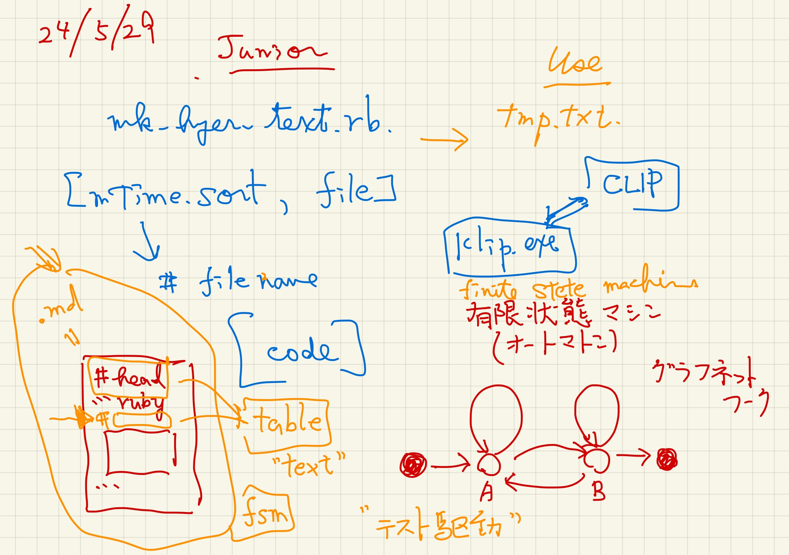
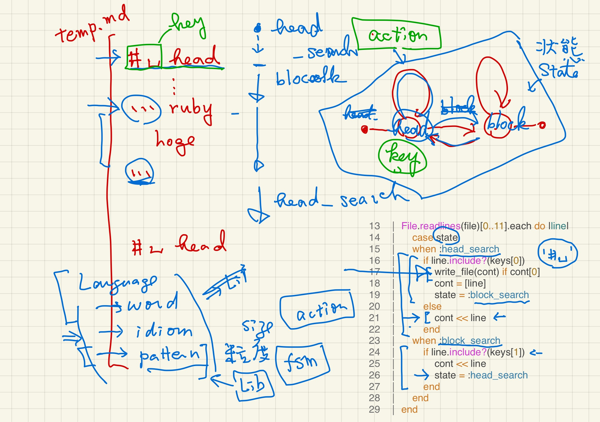
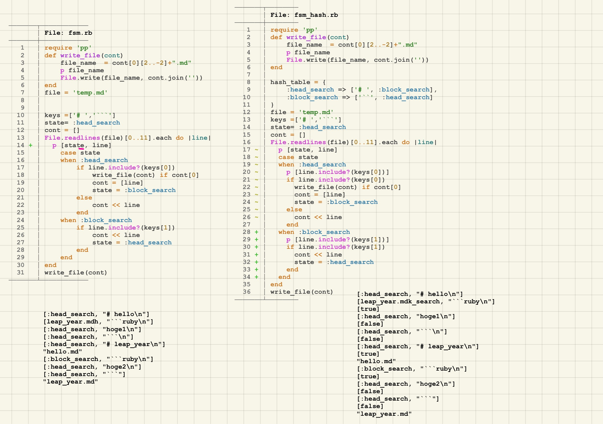
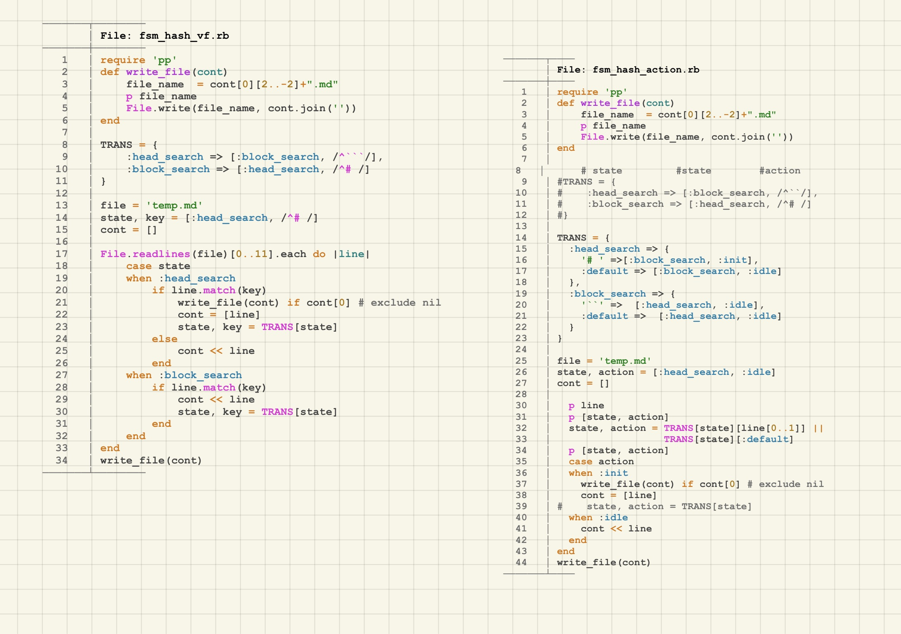

fsm (finite state machine)
Table of Contents
1. fsm_no_hash sample
| images/seminar_24s-19.jpg |  |
| ./fsm_no_hash.html | ./README_sample.html, ./fsm_no_hash.rb |
2. fsm_simplest
| images/seminar_24s-20.jpg |  |
#+OPTIONS: ^:{}
#+STARTUP: indent nolineimages overview num
#+TITLE: title
#+AUTHOR: Shigeto R. Nishitani
#+EMAIL: (concat "shigeto_nishitani@mac.com")
#+LANGUAGE: jp
#+OPTIONS: H:4 toc:t num:2
#+TAG: hoge, hoge2
#+TWITTER: off
#+SETUPFILE: https://fniessen.github.io/org-html-themes/org/theme-readtheorg.setup
* input
** head1
- list1 : 1
- list2 : 2
** head2
- list1 : 3
- list2 : 4
* result- table
| | head1 | head2 |
|-------+-------+-------|
| list1 | 1 | 3 |
| list2 | 2 | 4 |
require 'scanf' TRANSITIONS = { :head_search => [:block_search, "**"], :block_search => [:head_search, "- "] } state, key = TRANSITIONS[:head_search] file = 'README.org' File.readlines(file)[12..15].each do |line| p [state, key, line] p result = line[0..1] == key state, key = TRANSITIONS[state] if result != [] end
3. fsm_state_key
| images/seminar_24s-21.jpg |  |
| images/seminar_24s-22.jpg |  |
# Current_state => Trans_state, Key TRANSITIONS = { :head_search => [:val_search, "**"], :val_search => [:head_search, "- "] } state,key = TRANSITIONS[:head_search] file = 'README.org' temp, contents = [], [] File.readlines(file)[10..20].each_with_index do |line,i| p [i, 'before', state, key, line] state, key = TRANSITIONS[state] if line[0..1] == key p [i, 'after ', state, key, line] case state when :head_search contents << temp p temp = line.scan(/\*\* (\w+)/)[0] #"** head1\n" when :val_search temp << line end end pp contents